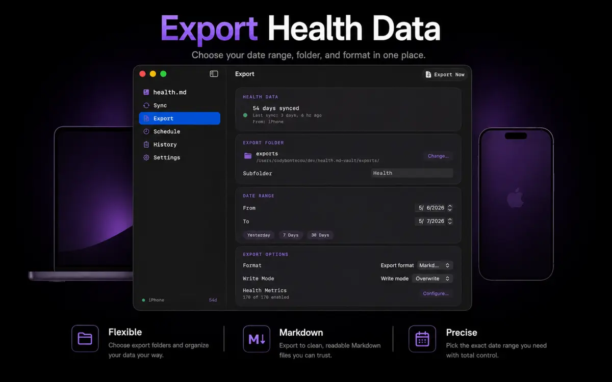
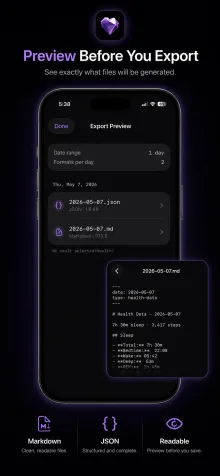
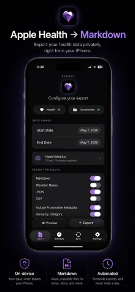
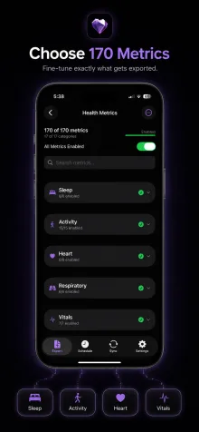
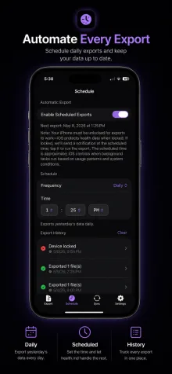
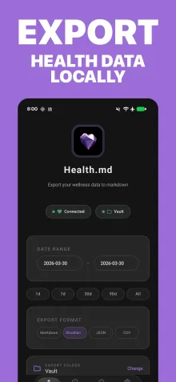
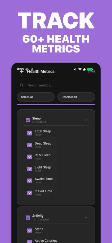
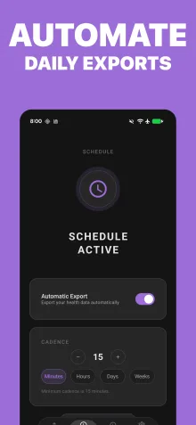
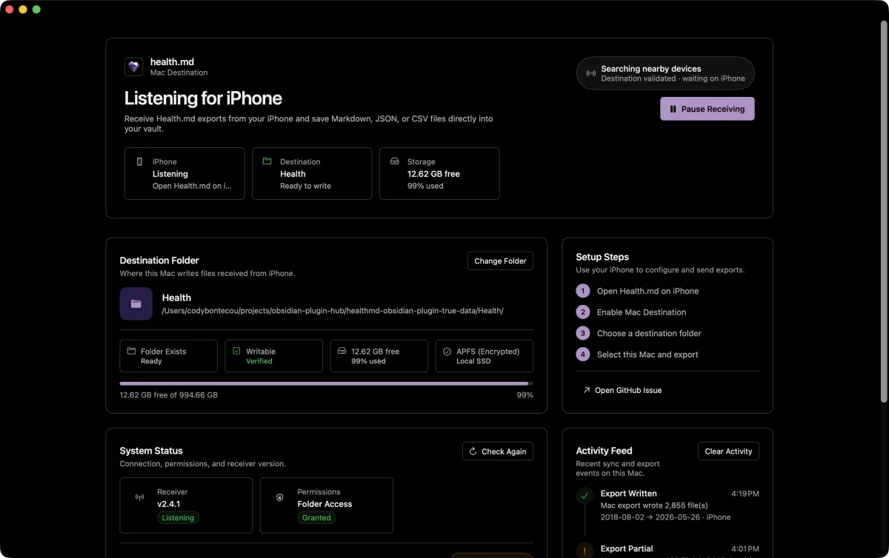

Connect Apple Health or Health Connect
Grant only the categories you want to export from iPhone, Apple Watch, Android, wearables, and connected apps.
Health.md writes Apple Health and Android Health Connect activity, sleep, heart, and workout data to Markdown, Obsidian Bases, CSV, or JSON — without accounts, servers, or subscriptions.
Start free. Upgrade once for unlimited exports and scheduled runs. Apple adds local Mac destinations and Shortcuts; Android adds Health Connect, document-provider folders, and Tasker/adb automation.


steps: 12642sleep_total_hours: 7.31workout_count: 1type: health-data
Health.md is an export layer, not another dashboard. It reads HealthKit on Apple devices or Health Connect on Android and writes plain files to destinations you control.
Grant only the categories you want to export from iPhone, Apple Watch, Android, wearables, and connected apps.
Select metrics, date ranges, filenames, folders, and any mix of Markdown, Obsidian Bases, CSV, and JSON.
Inspect values, metric names, units, and destination paths before Health.md writes the export.
Save to Files, iCloud Drive, Android document providers, an Obsidian vault, a synced folder, or a nearby Mac on your local network.
One HealthKit or Health Connect snapshot can become multiple file types in one export. Keep readable daily notes beside structured data without changing tools.
Daily summaries with optional YAML frontmatter, category sections, workout tables, and templates.
Frontmatter-first notes designed for Obsidian Bases, properties, and database-style views.
Schema-v7 daily summaries with an optional canonical Apple Health source-record archive.
Rows shaped for spreadsheets, notebooks, scripts, and downstream reporting workflows.
---
schema: healthmd.health_data
schema_version: 7
time_context:
calendar_timezone: America/Los_Angeles
timestamp_timezone: UTC
date: 2026-06-12
type: health-data
raw_capture_status: complete
raw_record_count: 18
raw_query_failure_count: 0
raw_integrity_warning_count: 0
raw_record_schema: healthmd.healthkit_records
raw_record_schema_version: 1
steps: 12642
active_calories: 604
sleep_total_hours: 7.31
average_heart_rate: 68
workout_count: 1
units:
steps: count
active_calories: kcal
sleep_total_hours: hours
average_heart_rate: bpm
---
# Health Data - 2026-06-12
## Sleep
- Total Sleep: 7.31 hours
- In Bed: 7.82 hours
## Activity
- Steps: 12,642
- Active Calories: 604 kcal
- Exercise Minutes: 52
## Heart
- Average Heart Rate: 68 bpm
- Resting Heart Rate: 54 bpm
## Workouts
| Time | Type | Duration | Distance |
| --- | --- | ---: | ---: |
| 7:14 AM | Outdoor Run | 42 min | 4.8 mi |{
"schema": "healthmd.health_data",
"schema_version": 7,
"date": "2026-06-12",
"type": "health-data",
"time_context": {
"calendar_timezone": "America/Los_Angeles",
"timestamp_timezone": "UTC"
},
"raw_capture_status": "not_requested",
"unit_system": "metric",
"units": {
"steps": "count",
"active_calories": "kcal",
"average_heart_rate": "bpm"
},
"activity": {
"steps": 12642,
"activeCalories": 604,
"exerciseMinutes": 52
},
"sleep": {
"totalDuration": 26316,
"totalDurationFormatted": "7h 18m"
},
"heart": {
"averageHeartRate": 68
}
}Date,Category,Metric,Value,Unit,Timestamp
2026-06-12,Metadata,schema,healthmd.health_data,,
2026-06-12,Metadata,schema_version,7,,
2026-06-12,Activity,Steps,12642,count
2026-06-12,Activity,Active Calories,604,kcal
2026-06-12,Heart,Average Heart Rate,68,bpm---
schema: healthmd.health_data
schema_version: 7
time_context:
calendar_timezone: America/Los_Angeles
timestamp_timezone: UTC
date: 2026-06-12
type: health-data
raw_capture_status: complete
raw_record_count: 18
raw_query_failure_count: 0
raw_integrity_warning_count: 0
raw_record_schema: healthmd.healthkit_records
raw_record_schema_version: 1
steps: 12642
active_calories: 604
exercise_minutes: 52
sleep_total_hours: 7.31
average_heart_rate: 68
workout_count: 1
units:
steps: count
active_calories: kcal
exercise_minutes: min
sleep_total_hours: hours
average_heart_rate: bpm
workout_details:
- index: 1
date: 2026-06-12
time: "07:14"
datetime: 2026-06-12T14:14:00Z
type: workout
metric: workouts
activity_type: "Running"
duration_sec: 2520
duration: "0:42:00"
distance_mi: 4.80
calories: 431
---
# 2026-06-12 Health Summary
This note is frontmatter-first so Obsidian Bases can filter,
sort, and chart properties like `steps`, `sleep_total_hours`,
and `workout_details` without changing the file format.Use Health.md as a controlled bridge between Apple Health, Android Health Connect, and a folder-based personal knowledge system.
Merge selected metrics into existing daily note frontmatter and replace app-managed body sections when needed.
Create timestamped Markdown files for workouts, mood logs, vitals, medications, and event-like metrics.
Use placeholders such as {date}, {year}, {month}, {weekday}, {monthName}, and {quarter} to match your vault.



Open the dedicated visualization lab to pick chart types, tune colors, test Obsidian-style widths, and copy ready-to-use health-viz blocks.
Drop a block into a note, change the visualization type, and Health.md turns exported HealthKit or Health Connect data into charts inside your vault.
```health-viz
type: activity-rings
to: 2026-05-17
last: 1
height: 320
theme: auto
colorScheme: theme
moveGoal: 650
exerciseGoal: 45
standGoal: 12
```activity-rings
Health.md for Android reads Health Connect on-device, previews your selected metrics, and writes Markdown, Obsidian Bases, CSV, or JSON to folders you choose through Android's Storage Access Framework.
Choose from 106 selectable Android metrics across activity, sleep, heart, vitals, body measurements, nutrition, workouts, and more.
Export to local device folders, Obsidian vaults, or provider-backed folders such as Google Drive, OneDrive, Syncthing, and Obsidian Sync when they expose write access.
Schedule exports with WorkManager, recover missed runs, and trigger exports from Tasker, adb, or other automation tools with explicit broadcast intents.



The iPhone remains the HealthKit source. The Mac app acts as a local destination, writes files to a folder you choose, and keeps export history near your desktop workflow.
iPhone-configured export jobs travel to the Mac over nearby-device connectivity. No health-data cloud account is required.
Write to folders that only exist on your Mac, including local Obsidian vaults and analysis directories.
Install the local helpers, inspect encrypted context, review history, and manage sync or settings from the Mac app.

The Mac app includes a CLI, a loopback query API, encrypted health context, and a sandboxed MCP helper. Each request names its metrics, sources, dates, and detail. Fresh HealthKit reads still happen on the open iPhone.
Use healthmd extract for selected schema-v7 days, source records, JSON Pointer projections, or JSONL with an explicit receipt.
Query metric series, sleep sessions, workouts, coverage, exact period comparisons, and workout-to-sleep timing with units, evidence, and missingness.
Large acquisitions and exports use resumable partitions. Query pages stay bounded while opaque cursors keep the complete logical result reachable.
Query context is encrypted on Mac with a Keychain-backed key. The API accepts loopback peers only and must never be proxied to another machine.
# Readiness without health values
healthmd doctor
# Canonical source-shaped data
healthmd extract --category Sleep --last 7 \
--output sleep.json
# Fresh encrypted-context query
healthmd query --metric resting_heart_rate \
--last 30 --all-pages
# First-class sleep sessions
healthmd sleep sessions --last-nights 14 \
--window first:4h
# Factual temporal alignment, not causation
healthmd training align --last 14 \
--workout running --sleep-window first:4h
# Explicit aggregation semantics
healthmd compare --metric steps:sum \
--first-from 2026-07-01 --first-to 2026-07-07 \
--second-from 2026-07-08 --second-to 2026-07-14Read the feature guides, inspect exact generated contracts, and review the CLI and agent privacy boundaries before giving Health.md or a local process access to sensitive health data.
Onboarding, exports, scheduling, Android setup, Mac sync, Shortcuts, daily notes, individual tracking, and paywall behavior.
Schema-v7 daily records, canonical source records, metrics, units, diagnostics, formats, roll-ups, API, CLI, and connected protocols.
Android setup, Storage Access Framework destinations, scheduled exports, Tasker/adb automation, and Google Play Billing behavior.
Backend selection, canonical extraction, typed queries, durable jobs, encrypted context, MCP tools, and loopback API contracts.
Announcements and workflow articles for Health.md features, app updates, and Obsidian health-data systems.
Short answers for questions people ask before installing a health-data export tool.
No. Health.md does not run a health-data cloud service or require an account. HealthKit and Health Connect reads happen on your devices. Exported files may sync only through destinations you choose. The website uses limited aggregate web analytics; the app does not include an analytics SDK.
Full Access unlocks unlimited exports and scheduled exports. On Apple platforms it also unlocks Mac destination workflows and Shortcuts support; on Android it unlocks automation-ready unlimited exports. It is a one-time in-app purchase handled by StoreKit or Google Play Billing.
Use Restore Purchase from the app’s paywall or settings. StoreKit restores Apple purchases tied to your Apple ID, and Google Play Billing restores Android purchases tied to your Google account.
Yes, when that data is already in Apple Health or Health Connect and you grant Health.md permission for the relevant categories.
No. Obsidian daily notes and Bases are supported, but Health.md also exports standard Markdown, CSV, and JSON files.
Yes. Choose only the formats you want for each export. Markdown and Obsidian output are optional.
The iPhone remains the HealthKit source. The Mac app acts as a local destination over nearby-device connectivity and writes files into the folder you choose.
Yes. Health.md for Mac includes scoped CLI queries and a sandboxed stdio MCP helper. Fresh Apple Health reads still happen on an open connected iPhone. Query context is encrypted on Mac, the API stays on loopback, and results preserve coverage and evidence. Health.md does not provide medical advice.
No. iOS background refresh and Android WorkManager scheduling are best-effort systems, so the scheduled time is a target. Health.md uses notifications and export history so you can confirm or retry runs.
No. Health.md is a data export tool, not a medical device, diagnosis tool, healthcare provider, or emergency service.
Refunds are handled by the store where you purchased Full Access: Apple through the App Store refund process, or Google through Google Play.
Download Health.md for free on Apple devices or Android, choose the metrics that matter, preview the files, and unlock Full Access once when you are ready for unlimited exports.